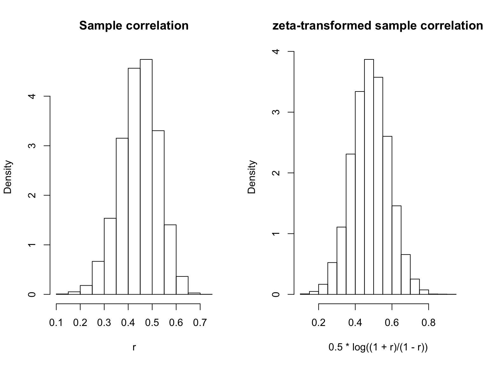
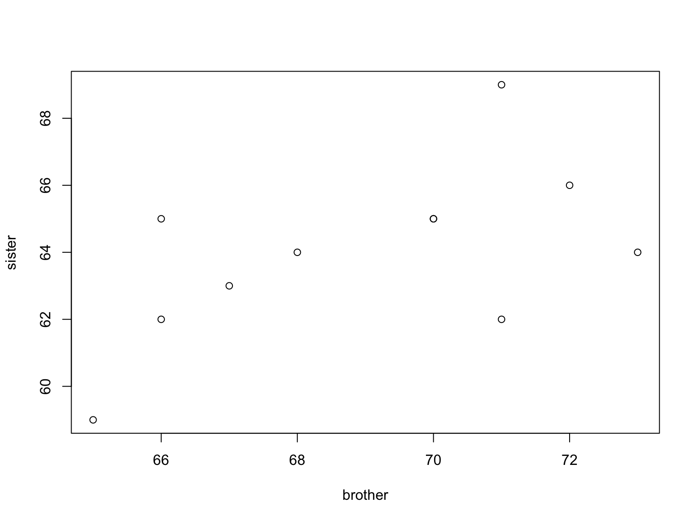

For \((Y_1, Y_2)\) being bivariate normal, the random variables \(Y_1\) and \(Y_2\) are also normally distributed. That is to say, the marginal distribution of \(Y_1\) is \(\mathcal{N}(\mu_1, \sigma_1^2)\) and the marginal distribution of \(Y_2\) is \(\mathcal{N}(\mu_2, \sigma_2^2)\).
The conditional distribution of \(Y_1 | Y_2\) and \(Y_2 | Y_1\) are given by \[\begin{gather*} Y_1 | Y_2 \sim N(\mu_1 - \mu_2 \rho \tfrac{\sigma_1}{\sigma_2} + \rho \tfrac{\sigma_1}{\sigma_2} Y_2, \sigma_1^2(1 - \rho^2) \\ Y_2 | Y_1 \sim N(\mu_2 - \mu_1 \rho \tfrac{\sigma_2}{\sigma_1} + \rho \tfrac{\sigma_{2}}{\sigma_{1}} Y_1, \sigma_2^2 (1 - \rho^2)) \end{gather*}\] One way to derive the above expression is via the following “de-correlation” trick. Let \(Z\) be the random variable \(Z = Y_1 - \rho \frac{\sigma_1}{\sigma_2} Y_2.\) We note that \(\mathrm{Cov}(Z, Y_2) = 0\), which implies that \(Z\) is independent of \(Y_2\). We thus have \[Y_1 | Y_2 = Z + \rho \frac{\sigma_1}{\sigma_2} Y_2 | Y_2 = Z + \rho \frac{\sigma_1}{\sigma_2} Y_2 \] and since \(Z\) is normally distributed, \(Y_1 | Y_2\) is normally distributed with mean and variance \[\begin{gather*} \mathbb{E}[Y_1 | Y_2] = \mathbb{E}[Z] + \rho \frac{\sigma_1}{\sigma_2} Y_2 = \mu_1 + \rho \frac{\sigma_1}{\sigma_2}(Y_2 - \mu_2) \\ \mathrm{Var}[Y_1 | Y_2] = \mathrm{Var}[Z + \frac{\sigma_1}{\sigma_2} Y_2 | Y_2] = \mathrm{Var}[Z] = \sigma_1^2 - 2 \rho^2 \sigma_1^2 + \rho^2 \sigma_1^2 = \sigma_1^2(1 - \rho^2) \end{gather*}\]as desired. The distribution for \(Y_2 | Y_1\) is derived in an identical manner.
Thus \(Y_1 | Y_2\) correspond to the normal error simple linear regression model \(Y = \beta_0 + \beta_1 X + \epsilon\) with \(\beta_0 = \mu_1 - \tfrac{\sigma_{1}}{\sigma_{2}} \rho \mu_2\), \(\beta_1 = \tfrac{\sigma_{1}}{\sigma_{2}} \rho\) and error \(\epsilon \sim N(0, (1 - \rho^2)\sigma_1^2)\) and similarly for \(Y_2 | Y_1\).
Given a collection of \(\{(Y^{(i)}_1, Y^{(i)}_{2})\}\) that are i.i.d. from some bivariate distribution \(F\), a common inference task is to infer the correlation \(\rho\) between the \((Y^{(i)}_{1})\) and the \((Y^{(i)}_{2})\). An estimate of \(\rho\) is given by the following Pearson correlation coefficient \[\begin{equation*} \hat{\rho} = \frac{\sum{(Y^{(i)}_{1} - \bar{Y}_{1})(Y^{(i)}_2 - \bar{Y}_2)}}{\sqrt{\bigl(\sum{(Y^{(i)}_{1} - \bar{Y}_{1})^2\bigr)}\bigl(\sum{(Y^{(i)}_2 - \bar{Y}_2)^2}\bigr)}} \end{equation*}\]It can be shown that if the distribution \(F\) of the pair \((Y_{1}, Y_2)\) is bivariate normal with \(\rho = 0\), i.e., \(Y_1\) and \(Y_2\) are independent normally distributed random variables, then \(\hat{\rho}\sqrt{n-2}/\sqrt{1 - \hat{\rho}^2}\) follows the Student \(t\)-distribution with \(df = n - 2\). See Section 16.28 of Stuart and Ord (1994Stuart, A., and J. K. Ord. 1994. Kendall’s Advanced Theory of Statistics: Vol 1. 6th ed. Hodder & Stoughton.).
On the other hand, if the distribution of the pair \((Y_{1}, Y_2)\) is bivariate normal with \(\rho \not = 0\), then the distribution of \(\hat{\rho}\) is sufficiently complex. For large \(n\), the central limit theorem yield the following large sample approximation for \(\hat{\rho} - \rho\).
which gives the transformation \(\hat{\rho} \mapsto \hat{\zeta}\) defined above. The transformation \(\hat{\rho} \mapsto \hat{\zeta}\) is viewed as a variance stabilizing transformation.
Thus, for large \(n\), we have \(\sqrt{n}(\hat{\zeta} - \zeta) \sim N(0,1)\) (contrast this with \(\sqrt{n}(\hat{\rho} - \rho) \sim N(0, (1 - \rho^2)^2)\)). This allows us to do simple hypothesis testing and interval estimation for \(\rho\). As an example, for a given \(\alpha \in [0,1]\), the \(100\% \times (1 - \alpha)\) confidence interval for \(\zeta\) is \[\begin{equation*} \hat{\zeta} \pm \frac{1}{\sqrt{n}} \ast \mathrm{qnorm}(1 - \alpha/2) \end{equation*}\] where \(\mathrm{qnorm}\) is the quantile function for the standard normal distribution. This implies the \(100\% \times (1 - \alpha)\) confidence interval \[\begin{equation*} [\tanh(\hat{\zeta} - \frac{1}{\sqrt{n}} \mathrm{qnorm}(1 - \alpha/2)), \tanh(\hat{\zeta} + \frac{1}{\sqrt{n}} \mathrm{qnorm}(1 - \alpha/2))] \end{equation*}\]where \(\tanh(x) = \tfrac{e^{2x} - 1}{e^{2x} + 1}\) is the inverse map of \(\tfrac{1}{2} \log{\tfrac{1 + x}{1 - x}}\).
nmc <- 10000
n <- 100
r <- numeric(nmc)
for (i in 1:nmc) {
X <- rnorm(n, mean = 0, sd = 1)
Y <- 0.5 * X + rnorm(n, mean = 0, sd = 1)
r[i] <- cor(X, Y)
}
par(mfrow = c(1, 2))
hist(r, freq = FALSE, main = "Sample correlation")
hist(0.5 * log((1 + r)/(1 - r)), freq = FALSE, main = "zeta-transformed sample correlation")
## The following data set are the heights of siblings (brothers & sisters)
## from a study in 1902 by K. Pearson and A. Lee. This data set appears as
## data set 373 in 'A Handbook of Small Data Sets' by D. J. Hand et al.
brother = c(71, 68, 66, 67, 70, 71, 70, 73, 72, 65, 66)
sister = c(69, 64, 65, 63, 65, 62, 65, 64, 66, 59, 62)
plot(brother, sister)
(rho <- cor(brother, sister))## _0.5581_(zeta <- 0.5 * log((1 + rho)/(1 - rho)))## _0.63_n <- length(sister)
(rho.CI <- tanh(zeta + c(-qnorm(0.975), qnorm(0.975)) * sqrt(1/(n))))## _0.03903_ and _0.8399_n <- 1000
X <- rnorm(n, sd = 1)
Y <- 0.5 + 0.3 * X + rnorm(n, mean = 0, sd = 1)
coefficients(lm(Y ~ X)) ## This give us the estimate beta1.hat| (Intercept) | X |
|---|---|
| 0.5637 | 0.2739 |
cor(X, Y)0.2767
K <- 10
X.expand <- rep(X, each = K)
Y <- 0.5 + 0.3 * X.expand + rnorm(n * K, mean = 0, sd = 1)
Z <- matrix(Y, nrow = n, byrow = TRUE)
Z <- rowMeans(Z)
coefficients(lm(Z ~ X))| (Intercept) | X |
|---|---|
| 0.4977 | 0.2982 |
cor(X, Z)0.6939
K <- 50
X.expand <- rep(X, each = K)
Y <- 0.5 + 0.3 * X.expand + rnorm(n * K, mean = 0, sd = 1)
Z <- matrix(Y, nrow = n, byrow = TRUE)
Z <- rowMeans(Z)
coefficients(lm(Z ~ X))| (Intercept) | X |
|---|---|
| 0.4949 | 0.2989 |
cor(X, Z)0.9056
K <- 2000
X.expand <- rep(X, each = K)
Y <- 0.5 + 0.3 * X.expand + rnorm(n * K, mean = 0, sd = 1)
Z <- matrix(Y, nrow = n, byrow = TRUE)
Z <- rowMeans(Z)
coefficients(lm(Z ~ X))| (Intercept) | X |
|---|---|
| 0.5005 | 0.3004 |
cor(X, Z)0.9974
The misuse of correlations derived from aggregated data to represent the correlation for individuals is sometimes known as the `fallacy of ecological correlation’
``Kendall’s Advanced Theory of Statistics’’, Volume 1.
n <- 100
X <- rnorm(n, mean = 0, sd = 1)
Y <- 0.5 + 0.4 * X + rnorm(n, mean = 0, sd = 1)
Z <- X^2 + rnorm(n, mean = 0, sd = 0.5)
cor(X, Y)## _0.425_cor(X, Z)## _0.2558_Pearson’s product-moment correlation \(\rho\) is only a measure of n linearity association. In addition, inferences on \(\rho\) usually assume that the pair \((Y_1, Y_2)\) is distributed bivariate normal.
Other notions of correlation/association coefficients can also be defined. Another correlation coefficient is the Spearman rank correlation coefficient \(r_S\). \(r_S\) is an example of a nonparametric statistic in the sense that it does not assume the population from which the data is sampled has any characteristic structure. For a collection of \(\{(Y^{(i)}_1, Y^{(i)}_{2})\}\) sampled from a general bivariate distribution \(F\), let \(\{R^{(i)}_1\}\) and \(\{R^{(i)}_{2}\}\) be the ranks of the \(\{Y^{(i)}_{1}\}\) and \(\{Y^{(i)}_{2}\}\), respectively.
The Spearman rank correlation coefficient is defined as \[\begin{equation*} r_{S} = \frac{\sum{(R^{(i)}_{1} - \bar{R}_1)(R^{(i)}_{2} - \bar{R}_2)}}{\sqrt{(\sum{(R^{(i)}_1 - \bar{R}_1)^2}) (\sum{(R^{(i)}_2 - \bar{R}_2)^2})}} \end{equation*}\]where \(\bar{R}_1 = \bar{R}_2 = (n+1)/2\) are the average of the ranks of \(R^{(i)}_1\) and \(R^{(i)}_2\).
X[1:95] <- rnorm(95)
X[96:100] <- rnorm(5, mean = 10, sd = 1)
Y[1:95] <- 0.5 + 0.5 * X[1:95] + rnorm(95, sd = 1)
Y[96:100] <- 0.5 + 0.5 * X[96:100] + rnorm(5, sd = 4)
cor(X, Y) ## Pearson's correlation0.7194
RX <- rank(X) ## Rank of the elements in X
RY <- rank(Y)
cor(RX, RY) ## Spearman's correlation 0.5376
We see that the Spearman rank correlation suffers less from “outliers”.
We note that \(-1 \leq r_S \leq 1\). The Spearman rank correlation coefficient measure the monotonic association between the \(\{Y^{(i)}_{1}\}\) and the \(\{Y^{(i)}_{2}\}\), e.g., \(Y^{(i)}_1 > Y^{(j)}_1\) is usually associated with \(Y^{(i)}_2 > Y^{(j)}_2\) for any \(i,j\) pair if \(r_s \approx 1\), and \(Y^{(i)}_1 > Y^{(j)}_1\) is usually associated with \(Y^{(i)}_2 < Y^{(j)}_2\) if \(r_s \approx - 1\).
We can perform hypothesis testing of monotone association, by using the fact that the test statistic \(\tfrac{r_{S} \sqrt{n - 2}}{1 - r_{S}^2}\) follows approximately the Student \(t\)-distribution with \(n - 2\) degree of freedom under the null hypothesis (the null hypothesis being that ``there is no monotonic association’’).